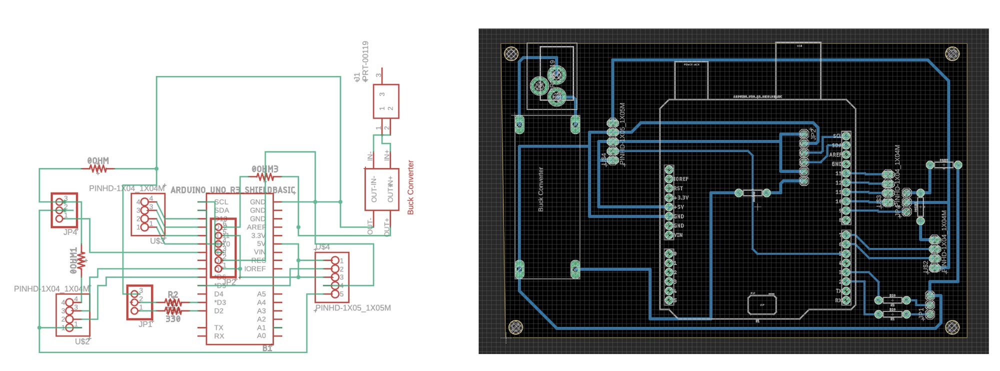
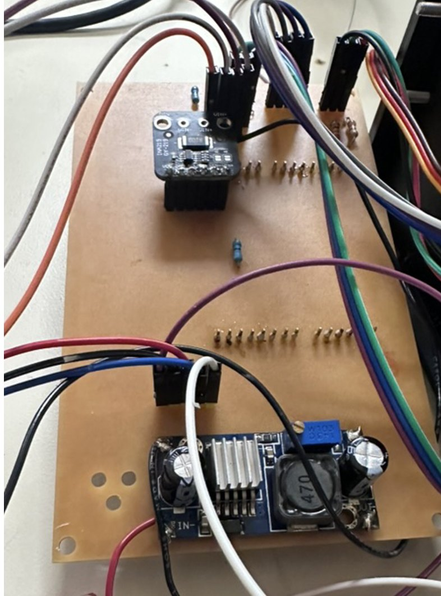
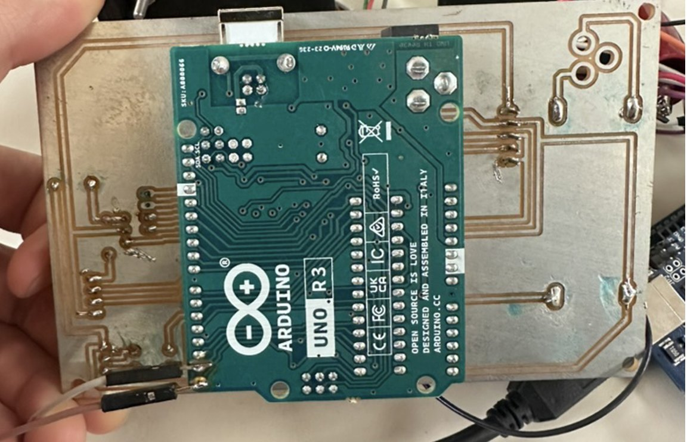

- 1stPCB I designed, fabricated & assembled
- 24 → 5 VBuck-converted supply rail
- 180°Continuous scanning sweep
- 10Arduino I/O channels in use
What it does
A motor sweeps an ultrasonic sensor back and forth across 180°. The sensor sorts anything it sees into three zones (far, near and close), and a red/green LED shows the zone. When something enters the close zone, the sweep stops. It holds position for a moment, then picks up where it left off.
How it works
- Power. A 24 V, 1 A input is stepped down to a 5 V rail by an adjustable buck converter (rated up to 40 V, 3 A).
- Remote on/off. A relay switches power to the motor, sensor and LED. The Arduino and a current-sensing module stay powered so the unit can always listen for an "on" command and report how much power it's drawing.
- Sensing. The ultrasonic sensor's trigger and echo pulses give distance from the echo's round-trip time. I verified these pulses on an oscilloscope before building the board.
- Motion. PWM pulses position the motor: 2 ms drives it toward 180° and 1 ms back toward 0°.
The PCB
This was my first board. I drew the schematic and laid out the PCB in Fusion 360, exported it to Eagle for fabrication, then soldered and tested it myself.
- Single-sided routing. Every trace had to fit on one copper layer, so I used 0 Ω resistors as jumpers wherever two traces needed to cross.
- Sized power traces. I calculated trace widths for the 24 V and 5 V rails from the current each one carries.
- Plug-in Arduino. The board mounts directly onto an Arduino Uno and carries the buck converter, relay connection, current sensor, and headers for the motor, sensor and LED.
- Checked before power-up. I tested every connection for continuity with a multimeter before applying power.



Problems we solved
- Buck converter collapsing under load. Our first converter dropped below 1 V as soon as anything was connected. We tested it with different resistor loads and with the motor to confirm the part was bad, then swapped in a replacement and tuned it to 5 V.
- Moving off USB power. The system stopped working when the motor and sensor were moved from the Arduino's 5 V pin to the external rail. It worked once the Arduino itself also ran from that rail, so the whole system shared one supply.
- Relay glitch. Closing the relay made the motor act as if it were at 180° when it wasn't. We traced this to the code running its position checks too quickly and fixed the timing.